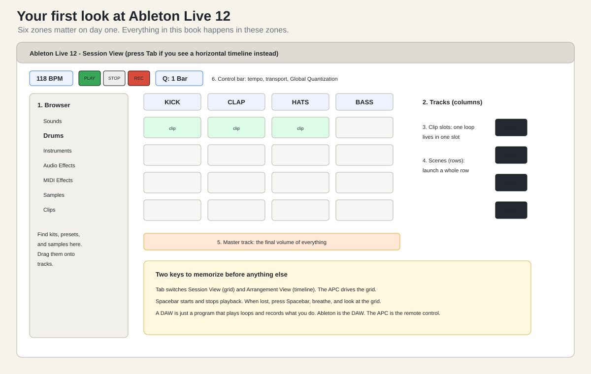

Skip this chapter only if you have already made loops in Ableton. If you have never seen Ableton — or any DAW — read this first. Nothing in it requires the APC.
A DAW (digital audio workstation) is a program that records, plays, and loops music. Ableton Live is a DAW with a special trick: Session View, a grid where every cell holds a loop that you can start and stop in time with everything else. The APC40 MK2 is a physical copy of that grid with real buttons, real faders, and real knobs. Ableton is the instrument; the APC is how you play it.

When Live 12 opens you will see one of two layouts:
Press the Tab key to flip between them. Do it a few times now so the flip never surprises you again.
Match these against the plate above:
| Zone | What it is | Why you care |
|---|---|---|
| Browser (left edge) | Searchable library of instruments, kits, samples | Every sound in your set starts here. |
| Tracks (columns) | One instrument or sound source each | One APC column = one track. |
| Clip slots (cells) | Each holds one loop (“clip”) | One APC grid button = one slot. |
| Scenes (rows) | A row of clips across all tracks | One APC scene button = one row. |
| Master (right column) | The final output level | If this is down, nothing is loud. |
| Control bar (top) | Tempo, play/stop/record, Global Quantization | Tempo lives here; so does the 1 Bar launch grid. |
| Word | Meaning |
|---|---|
| Clip | One loop in one slot: a bar of drums, a chord pad, a riser. |
| Scene | A whole row of clips launched together: a musical section. |
| Launch | Start a clip or scene, quantized to the beat. |
| Quantization | Live waits for the next bar line before acting, so you cannot be off-beat. |
| Session ring | The red rectangle in Live showing which 8x5 block the APC currently controls. |
| Send / Return | A knob that feeds a track into a shared effect (reverb, delay). |
| Macro | One knob that controls a group of effect parameters at once. |
| Warp | Live stretching audio to match your tempo. |
| Arm | Make a track ready to record. |
Checkpoint. You can open Live 12, say which view you are looking at, flip views with Tab, and point at the browser, a track, a clip slot, a scene, and the tempo field without hunting.